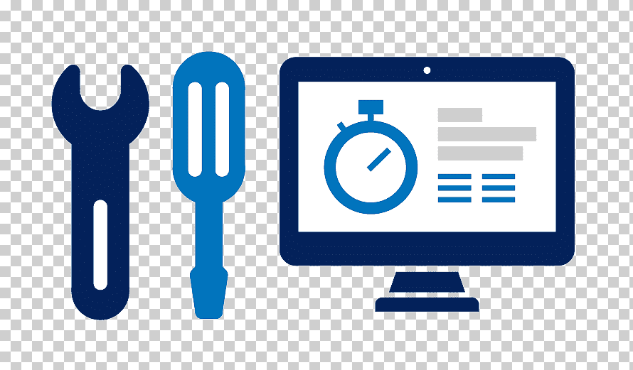
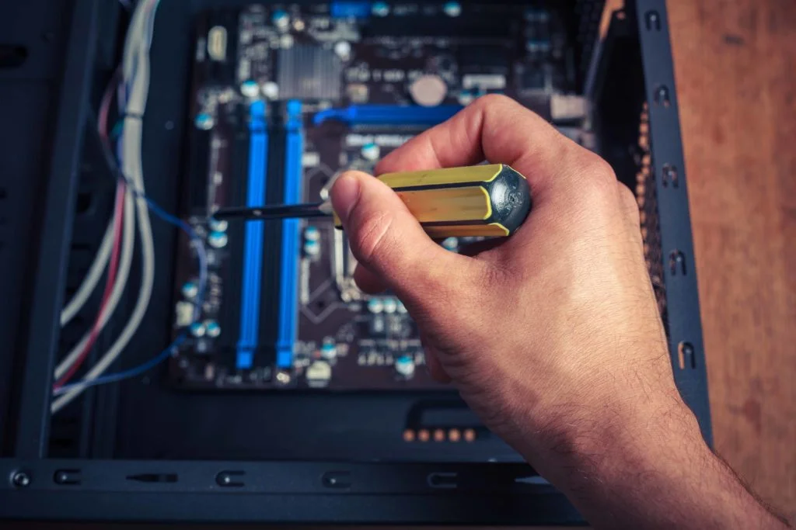
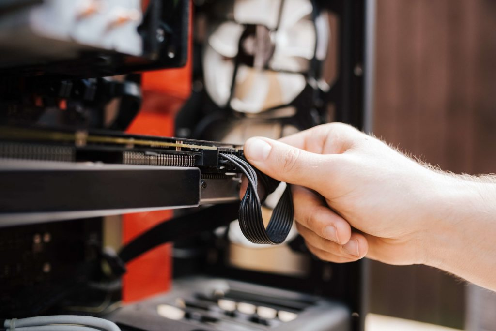

Guia Sobre el Mantenimiento Correctivo
Pasos para realizar un Mantenimiento Correctivo de forma efectiva
Los pasos que componen el proceso de mantenimiento correctivo no solo son una secuencia lógica, sino también un conjunto de estrategias diseñadas para resolver problemas de manera eficiente y minimizar las interrupciones. Estos pasos se han desarrollado a lo largo del tiempo como resultado de las mejores prácticas y la experiencia acumulada en la gestión de activos y mantenimiento. Cada uno de ellos desempeña un papel crucial en el proceso y contribuye a la recuperación exitosa de los activos afectados. A continuación, te mostramos los diferentes pasos que debes seguir para llevar a cabo un mantenimiento correctivo efectivo y restaurar la funcionalidad de tus activos:
1. Evaluación de la situación y diagnóstico
Antes de emprender cualquier acción, es crucial realizar una evaluación minuciosa de la situación. Esto implica identificar la falla específica, determinar su alcance y comprender su impacto en la operación. Un diagnóstico preciso proporciona la base para tomar decisiones informadas sobre cómo proceder.
2. Planificación y recursos
Una vez que la evaluación está completa, es hora de planificar la intervención. Definir los recursos necesarios, como personal capacitado, herramientas y piezas de repuesto, es esencial para un proceso de mantenimiento efectivo. Una planificación adecuada minimiza el tiempo de inactividad y asegura una intervención fluida.
3. Aislamiento y seguridad
La seguridad es primordial en cualquier operación de mantenimiento. Antes de iniciar cualquier trabajo, es fundamental aislar adecuadamente el equipo afectado y seguir los protocolos de seguridad establecidos. Esto no solo protege al personal involucrado, sino que también evita daños colaterales.
4. Reparación o reemplazo
Una vez garantizada la seguridad, es el momento de abordar la reparación o el reemplazo del componente defectuoso. La opción de reparación o reemplazo dependerá de la gravedad de la falla y de la viabilidad de cada solución. La elección debe basarse en la durabilidad y la eficiencia a largo plazo.
5. Pruebas y verificación
Con la reparación o el reemplazo completados, las pruebas y verificaciones exhaustivas son esenciales. Estas pruebas aseguran que el activo funcione correctamente y que la falla haya sido corregida de manera efectiva. La verificación de la funcionalidad y la identificación de cualquier problema residual son esenciales para prevenir futuras interrupciones.
6. Documentación y seguimiento
El registro detallado de todas las acciones tomadas durante el proceso es un componente crítico. Documentar el diagnóstico, las acciones realizadas, los recursos utilizados y los resultados de las pruebas permite un seguimiento efectivo y un análisis de tendencias para mejorar las operaciones futuras.
7. Análisis de Causa Raíz (Opcional)
Realizar un análisis de causa raíz opcional después de una falla puede proporcionar información valiosa para prevenir problemas similares en el futuro. Identificar las causas subyacentes permite implementar medidas preventivas y mejorar la confiabilidad del equipo a largo plazo. El mantenimiento correctivo, aunque reactivo por naturaleza, puede ser llevado a cabo de manera planificada y efectiva. Cada paso es una parte crucial del proceso que contribuye a la recuperación exitosa de los activos y la continuidad operativa. Al seguir estos pasos, las organizaciones pueden minimizar el impacto de las fallas y mantener la maquinaria en funcionamiento sin problemas.